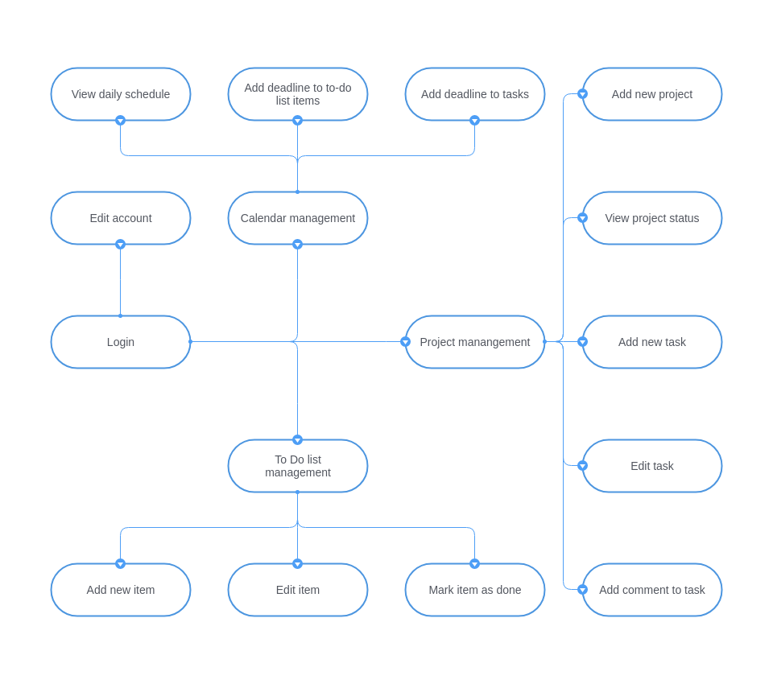

Interviews with potential users
Interview structure
We have organized our face-to-face interviews around the following questions:
- Describe shortly a day at your workplace.
- How do you organize your daily tasks?
- What is the biggest problem that you confront yourself with everyday regarding organization?
- What task management systems have you used? Why did you use these products?
- What shortcomings did you encountered using these task management systems?
- If you could choose a new functionality for a new task management system to implement, what would that be?
Interview with Loredana
Loredana is a business owner. She is 23 years old and started a bussiness for renting costumes for kids, with the help of her boyfriend and some friends.
- What would a usual day in your life look like?
- You mentioned the word 'chaos'. How did you try to improve this so far?
- Have you tried any task management systems?
- What did you not like about your experience with them?
- What other tools would you like to have?
Oh, it's a mostly chaotic. I start my day by reviewing what I didn't get to do the previous day (it's always something!). New demands come all the time and I need to make sure the priorities are in order and that I do have the time to fulfill the existing demands.
Well, I try to keep track of everything using Excel documents. The review process I mentioned consists of choosing top 2 priorities for the day - in other words, what I have to achieve by the end of the day.
I mostly use G Suite tools for tracking my business. Especially Sheets, Docs and Calendar. They are pretty straightforward and for small workloads, they are fine.
Well, team communication is not as straighforward as I would like. My team mates forget to check all the sheets and miss information. We called a few clients multiple times for the same order because someone failed to update everything in time.
I'd like to check some user statistics to better manage my time. I need a better work-private life balance!
Interview with Cosmin
Cosmin is a software developer. He is 25 years old and works in collaborative environments for 2.5 years.
- Tell me how was today at your workplace.
- How do you organize your daily tasks?
- What issues do you have with these tools?
- Why?
- What do you consider to be your greatest problem regarding daily task organization?
- Finally, what other thing you like to have from a task manangement tool?
I began my day with a daily meeting with my team. We established our tasks for today and what problems we had yesterday. I then mostly worked on my assigned tasks. I also had some meetings after lunch for discussing new features we have to implement in the next release.
I use Jira for project tasks and bug management, Trello for personal reasons and Google Calendar for checking my schedule.
I have no issues with them. I've use them for a long time. However, I still don't like Jira.
Well, there are too many customizations that need to be setup by an admin. Also, the history is split up in 4 tabs and the search withing a project could and should be a lot better
Context switching. Jumping from one app to the other and also handling unexpected issues from clients or with my own code.
I'd like to have reminders build into JIRA or Trello. I have to admit I hated deadlines when I was in college, but now I think they'd make me more productive.
Interview with Mirela
Mirela works in sales for a small family business. She is 50 years old and has been working in her position for more than 10 years.
- What do you usually do at work?
- How do you organize all these tasks?
- Did you ever use task manangement systems?
- Would you consider using a software for this?
- What do you imagine this software should do?
I add into the system bills from provider and I make payments for them according to our montly schedule. I also establish prices and discount for sales and make daily reports of our sales, stocks and so on. Most days, I also have other tasks given by management.
I usually have a routine, but when something unexpected appears, I change according to the priority (if it's an important client or if it's requested directly from my boss).
No, I don't think so. I usually have sticky notes on my desk wall with reminders.
Yes, I mostly use my computer for my other tasks too.
Well, I'd like to make some lists like my sticky notes. It would be nice if I could also add how much time it would take me to do certain things or when they are needed.
User persona
User stories
- "As a user, I want all the tools I need in one place."
- "As a member of a collaborative team, I need to follow the status of the tasks of the team."
- "As a member of a collaborative team, I need to add new tasks for the team."
- "As a member of a collaborative team, I need to be able to add new information to existing tasks."
- "For my productivity, I want to be able to track my tasks using to-do lists."
- "For my productivity, I want to set deadlines to my tasks."
- "For my productivity, I want to check my events and tasks in the calendar."
Use cases
User flows
Navigate TaskYourself
Project board activity


Calendar activity

To Do lists activity


Account activity